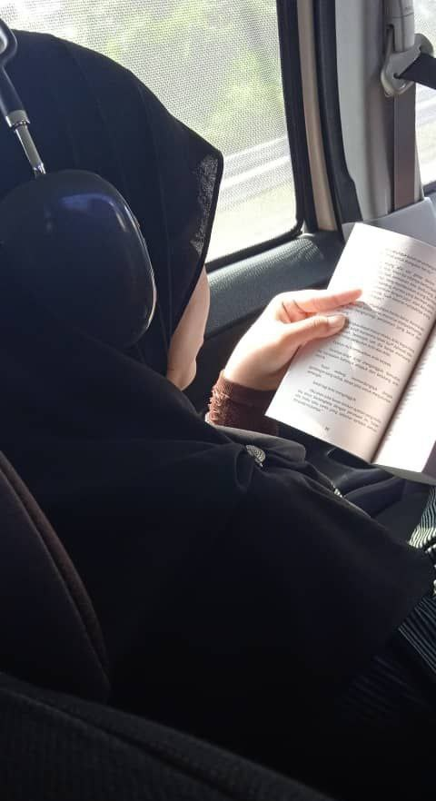

My hobby is to read, I mostly can read any novel with any genre as long as the story has an amazing plotline. My forever favourite novel to read is Omnicients Reader's viewpoint by author Sing Shong. I often read Korean or even Chinese novels that have been translated into English, but I do read in Bahasa Melayu, although not so much because of the cliche romance that I can guess the ending, but Malay Fantasy genre does make me read them such as Nirnama and Hikayat Satria-Satria Sejati from Hilal Asyraf or any kind of Fixi horror story.